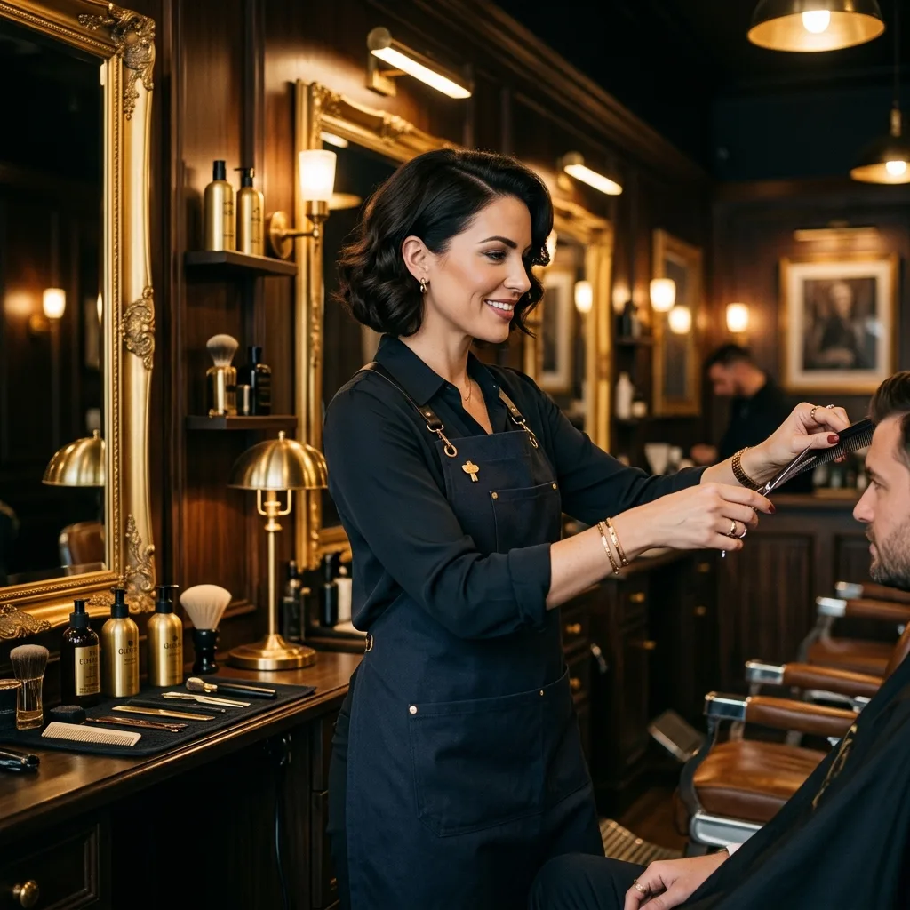
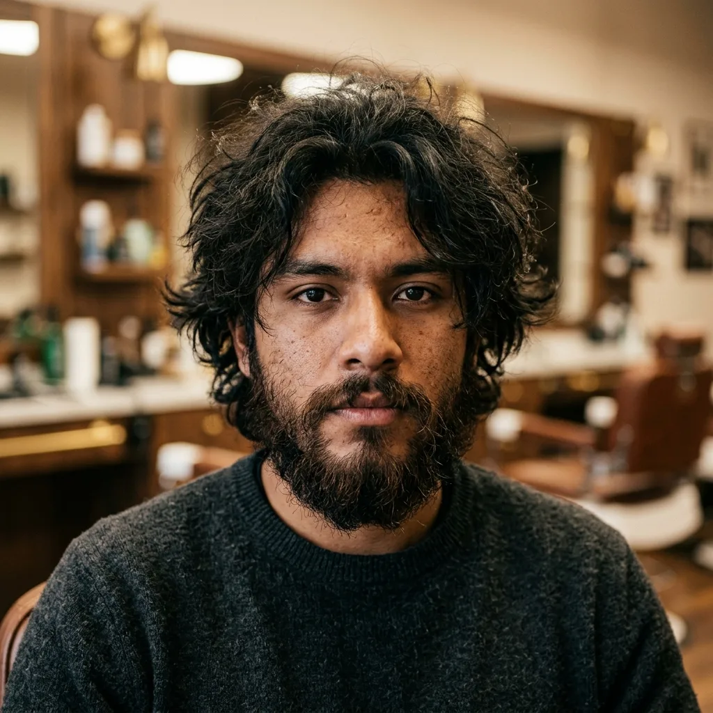
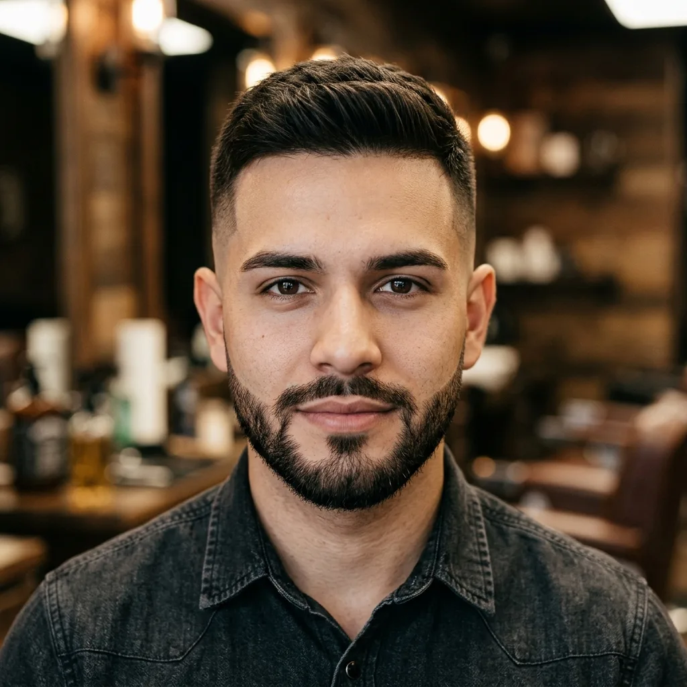

Corte de Autor
Consulta de rostro, corte a tijera y máquina, diseño de línea de precisión y acabado con productos de grado profesional.
$38
45 min
Estudio de barbería de autor
Cortes de autor para hombres que no negocian su imagen. Un ojo clínico, formado en cada estilo —del clásico al urbano— y una precisión que solo la mirada de Lisseth logra leer en tu rostro.
Formación clásica europea y dominio de fades urbanos de precisión.
Ritual completo: navaja, toalla caliente, tónicos de grado profesional.
Agenda privada — un cliente, una silla, cero prisa.
El sello de autor
Entré a este oficio para demostrar algo simple: que la precisión no tiene género, tiene mirada. Años de formación en escuelas clásicas de barbería me dieron el dominio técnico —la navaja, el fade, el diseño de barba— pero fue mi ojo el que aprendió a leer cada rostro antes de tocarlo.
No existe "un estilo de la casa". Existe tu estilo, ejecutado con un rigor que no perdona el detalle: la línea que no tiembla, el degradado que no se nota, la barba que respeta la estructura de tu mandíbula.
Cada cliente que se sienta en mi silla sale con algo más que un corte: sale con la certeza de que alguien lo miró de verdad.
Especialización en corte tradicional a tijera y afeitado clásico con navaja recta, perfeccionando las técnicas en academias de referencia continental. Respeto absoluto al ritual tradicional en tres tiempos.
Estudio analítico de la estructura ósea, ángulos faciales y la dirección del crecimiento capilar de cada cliente. Adaptamos las tendencias para potenciar y estilizar las facciones naturales de tu rostro.
Dominio de degradados limpios con transiciones imperceptibles. Diseños de líneas arquitectónicas y terminaciones ultra perfiladas que garantizan durabilidad y nitidez en tu imagen diaria.

Retrato editorial — Estudio LissethMenú de experiencias
Precios en tarifa estándar. Ajustables según densidad, largo y complejidad del diseño solicitado.
Consulta de rostro, corte a tijera y máquina, diseño de línea de precisión y acabado con productos de grado profesional.
Vapor caliente, navaja afilada a mano, perfilado de barba y bigote, y tónico calmante post-afeitado.
Corte de Autor + Ritual de Barba + masaje capilar. La experiencia completa para quien no tiene tiempo que perder.
Fades de alto contraste y diseños a navaja: líneas arquitectónicas para un estilo urbano contundente.
Ritual tradicional a navaja recta, toallas calientes en tres tiempos, y aceites pre y post afeitado.
Estudio de proporciones
Descubre qué corte y estilo de barba potencian mejor las líneas naturales de tu rostro de acuerdo a las reglas de simetría y visajismo.
Considerado el canon ideal por su equilibrio simétrico. La frente es ligeramente más ancha que la mandíbula y las curvas son suaves, lo que otorga total versatilidad para experimentar estilos.
Cortes con flequillo despejado o volumen superior texturizado, como un fade medio o un tupé clásico. La frente despejada ayuda a lucir la perfecta simetría de tus facciones.
Cualquier estilo se adapta. Recomendamos una barba de tres días bien delineada o una barba clásica corta para resaltar el contorno de la mandíbula sin sobrecargar el rostro.
Se distingue por una mandíbula fuerte y angulosa y una frente amplia. El enfoque de Lisseth radica en suavizar sutilmente los ángulos muy duros para estilizar el rostro sin perder la fuerza del semblante.
Cortes que aporten altura e incluyan volumen superior (como Pompadours o tupés texturizados) con laterales pulidos pero no excesivamente rapados para no ensanchar la sien.
Barba con perfilado sutilmente redondeado en las esquinas de la mandíbula o barba de varios días degradada. Ayuda a suavizar los rasgos marcados y estilizar el mentón.
La longitud y anchura facial son similares, con pómulos prominentes y mandíbula de contornos circulares. El objetivo de visajismo es crear ángulos ópticos para alargar e imprimir mayor definición al rostro.
Cortes de alto contraste (como Fades altos o Undercuts) con volumen y dirección vertical en la parte superior. Esto rompe la simetría esférica y alarga visualmente la cabeza.
Barba tipo candado o barba completa cortada de manera muy lineal y recta en las mejillas, con mayor longitud en el mentón. Alarga y estiliza las facciones.
Presenta pómulos altos y anchos con una frente y mandíbula estrechas. Es una estructura muy angulosa que requiere suavizar la prominencia de las mejillas y dar volumen a la parte inferior.
Cortes texturizados con volumen medio en los laterales (evitar rapados muy altos) para armonizar los pómulos anchos, y peinados con raya al lado o movimiento.
Barba completa y poblada para ensanchar y dar peso visual a la zona de la barbilla estrecha, perfilada de forma horizontal para equilibrar el conjunto.
La frente es la sección más ancha del rostro y los pómulos son marcados, estrechándose progresivamente hasta una barbilla fina y puntiaguda. Buscamos balancear la anchura de la frente y rellenar la mandíbula.
Cortes con caída natural de cabello a los lados de la frente (flequillos desordenados o medias melenas texturizadas) para restar protagonismo al ancho superior.
Barba completa poblada de varios días o de longitud media. Aumenta la robustez de la zona del mentón contrarrestando la barbilla en punta.
Lookbook
Filtra por estilo para ver el criterio aplicado en cada categoría.
Referencia ilustrativa de estilo — no es la transformación de un mismo cliente.

Antes
Después — Diseño UrbanoPrueba social
"Primera vez que un corte me deja exactamente como pedí. Lisseth tiene un ojo increíble para la proporción."
"El ritual de barba con toalla caliente es otro nivel. Salgo de ahí sintiéndome nuevo."
"Ambiente serio, atención impecable, cero prisa. Vale cada peso."
"Le pedí un fade urbano difícil de ejecutar y lo clavó a la primera."
"Es la única barbería donde confío sin tener que explicar mucho. Ella ya sabe leer lo que necesito."
"Combo ejecutivo antes de una reunión importante. Cambié mi rutina por completo."
Reserva tu cita
Simulador de agenda — confirma en tres pasos y ábrelo por WhatsApp.
Aún no has seleccionado experiencia, día ni hora.
Preguntas frecuentes
¿Alguna otra duda? Escríbenos por WhatsApp.
Lisseth aporta un ojo clínico, detallista y una visión vanguardista al estilismo masculino. Nos enfocamos en la simetría facial, la pulcritud y en asesorarte para encontrar el estilo exacto que potencie tu imagen, rompiendo con los cortes genéricos de las barberías tradicionales.
Absolutamente todos. Desde degradados urbanos de alta complejidad (fades, diseños freestyle) hasta cortes clásicos, ejecutivos de negocios y rituales tradicionales de barba con toalla caliente y navaja libre.
Sí, para garantizarte una experiencia de lujo sin esperas y con la atención 100% personalizada de Lisseth, trabajamos exclusivamente bajo agenda previa a través de nuestra plataforma web.
Cada sesión se toma con la seriedad que merece, durando entre 45 y 60 minutos según la complejidad del servicio y el ritual seleccionado. Aquí no trabajamos al apuro; esculpimos cada detalle.